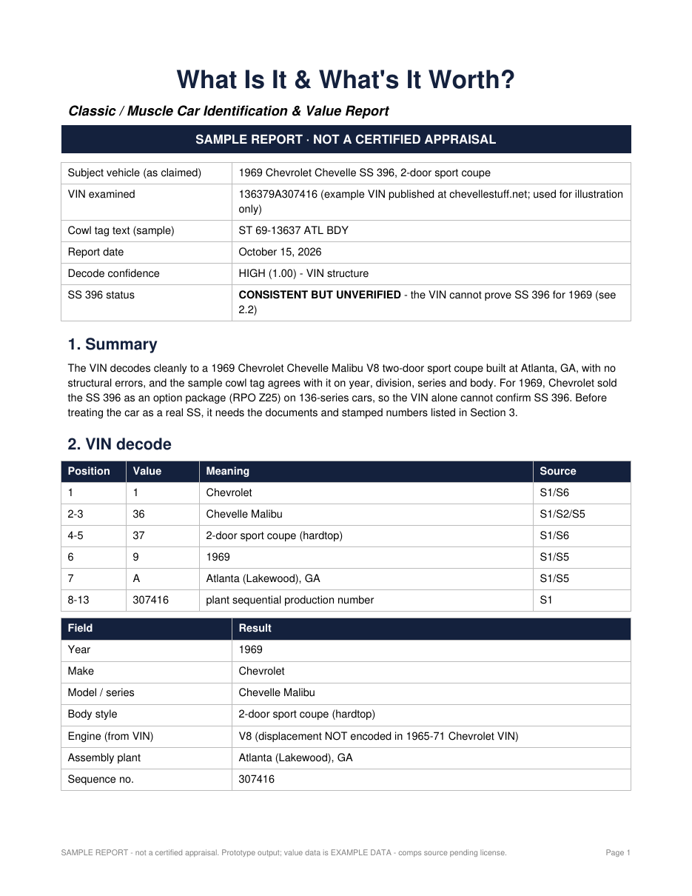

For classic & muscle car owners
Send us the VIN, the trim tag and some photos. You get back a plain-English report: what the car was built as, whether the numbers match, and a value range based on sold cars like it, with the confidence stated.
Covers American classics and muscle cars from every make. You don't need to know anything about cars to use it.
The VIN, a photo of the trim/cowl/fender tag, and whatever photos and paperwork you have. Phone photos are fine.
We decode the VIN and tag, compare them against each other and against factory codes, and flag anything that doesn't add up.
A clear PDF: what the car is, how sure we are, a value range built from comparable sales, and what to check next.
This is page one of a real sample report for a 1969 Chevelle. It shows the decode, a confidence rating for each finding, and a straight answer on what the VIN can and can't prove. Here, that means it can't confirm an SS 396 on its own.
The sample uses a publicly posted example VIN, for illustration only.
Open the full sample (PDF)
$19
$39
$49
Launch pricing is introductory and may change. Not available for purchase yet. Join the waitlist to hear when we open.
No. It's an informational report. If you need a value for insurance, probate, taxes, a loan or a court, hire a certified appraiser. Our report can help you get ready for that appointment.
American classic and muscle cars, mainly pre-1981 cars with short manufacturer-specific VINs. We'll also look at later cars. If we can't give a useful answer, we'll tell you.
Photos and decoded codes can show whether the numbers are consistent. Proof often needs factory documents such as a Marti Report, PHS docs or a build sheet. We'll tell you which ones apply to your car.
From comparable sales of similar cars, adjusted for the condition and originality you describe. We show the range and how confident we are. We don't give one number.
Yes. Most people who need this inherited the car or are helping a relative. We'll tell you exactly which photos to take.
The VIN, a photo of the trim/cowl/fender tag if the car has one, and general photos. Paperwork such as titles, window stickers or build sheets helps but isn't required.
We'll email you once when reports open. No spam, and we don't share your address.